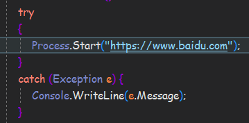

WPF 项目迁移到.Net Core中时居然出了一堆问题...(很无语)
今天
在使用的时候居然发现Process.Start居然打不开Url链接了？ 报 找不到指定文件 的异常？！
一、bug重现
首先
以.Net Core 3.1框架 中一个Console项目 打开百度为例:

运行
然后你就会得到:
纳闷
的是，这种方法打开Url在.Net Framework中是没问题的..
二、解决方法
方案
一：使用windows系统自带的资源管理器来打开Url
Process.Start("explorer", "https://www.baidu.com");
你就
可以得到一个浏览器窗口，打开着百度网页..
但是
如果你的Url复杂一点的话，例如打开百度搜索what
Process.Start("explorer", "https://www.baidu.com/s?wd=what");
explorer表示不干，并直接给你抛了个文件管理器窗口
所以这个方法只可以用于打开简单的URL...
方案二：使用cmd中的start命令 可以打开任意形式的URL

string url = "https://www.baidu.com/s?wd=what"; Process p = new Process(); p.StartInfo.FileName = "cmd.exe"; p.StartInfo.UseShellExecute = false; //不使用shell启动 p.StartInfo.RedirectStandardInput = true;//喊cmd接受标准输入 p.StartInfo.RedirectStandardOutput = false;//不想听cmd讲话所以不要他输出 p.StartInfo.RedirectStandardError = true;//重定向标准错误输出 p.StartInfo.CreateNoWindow = true;//不显示窗口 p.Start(); //向cmd窗口发送输入信息 后面的&exit告诉cmd运行好之后就退出 p.StandardInput.WriteLine("start "+url + "&exit"); p.StandardInput.AutoFlush = true; p.WaitForExit();//等待程序执行完退出进程 p.Close();
OK
以上
的问题我只在Windows平台上找到过，不知Linux和OSX有没有...
Thanks